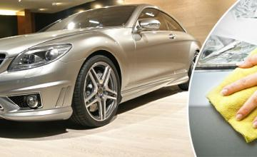
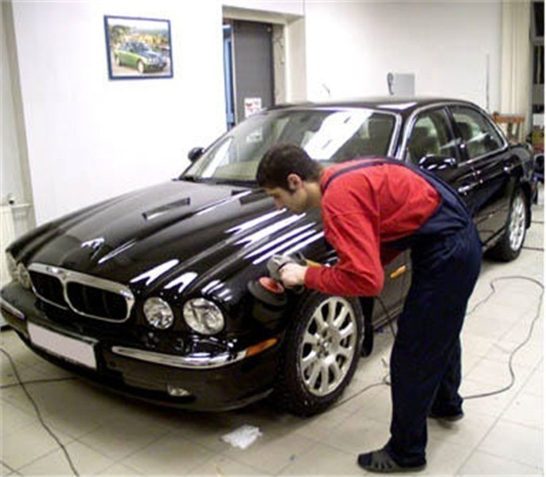
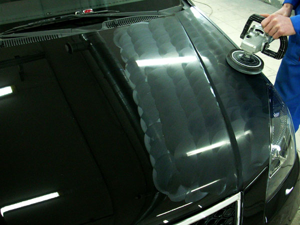
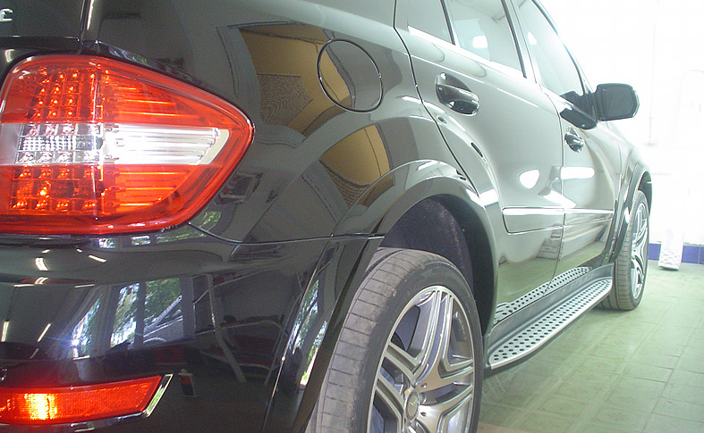

Абразивная полировка автомобиля является разновидностью восстановительной полировки. Цель абразивной полировки кузова – восстановление первоначального цвета и блеска лакокрасочного покрытия. Абразивная полировка кузова применяется тогда, когда лакокрасочное покрытие сильно изъедено мелкими царапинами и дефектами, но дефекты при этом не достигают уровня грунтовки и потому не требуют покраски. В случае же наличия явных глубоких дефектов лакокрасочного покрытия полировка еще нужнее, но перед полировкой обязательно требуется профессиональная покраска дефектных участков с качественным подбором цвета. Это будет являться гарантией эффекта «нового кузова» после полировки.
В процессе полировки убираются такие дефекты, как царапины, потертости и участки помутнения на поверхности кузова. Эти дефекты возникают вследствие воздействия механических абразивных факторов (пыль, песок, грязь), химических факторов (органические и неорганические кислоты, щелочи, соли) и других факторов, включая обыкновенные солнечные лучи, которые со временем формируют на поверхности вид старой машины, подобно тому, как морщины старят человека. Наиболее быстро такие дефекты возникают при отсутствии регулярной защитной полировки автомобиля, которая уменьшает вероятность повреждения краски.
Суть начальной стадии абразивной полировки кузова состоит в удалении верхнего слоя лакокрасочного покрытия толщиной в несколько микрон. Весь процесс абразивной полировки представляет собой несколько этапов:
Собственно абразивная полировка. Проводится с помощью специальных абразивных паст. Первый этап полировки необходим для удаления самого верхнего слоя лакокрасочного покрытия. При этом сглаживаются неровности поверхности и удаляются заведомо поврежденные микроцарапинами участки краски. В зависимости от характера поверхности используются соответствующие виды паст (мелко-, средне- и крупнозернистые абразивные пасты). Довольно часто прибегают к их последовательному использованию. Крупнозернистые пасты эффективно сглаживают царапины. Среднезернистые пасты служат для сглаживания мелких царапин и рисок, а также для стирания границ свежей и старой покраски. Мелкозернистые пасты служат для борьбы с матовой поверхностью. Особенно заметен ее эффект на темной поверхности. Неплохо справляется с круговыми разводами.
Мойка автомобиля для удаления абразивных частиц и продуктов полировки. При необходимости еще до первого этапа проводится предварительная мойка автомобиля с удалением некоторых специфических загрязнений, например, битумных пятен. После мойки поверхность тщательно высушивается.
Мягкая полировка. Также проводится с использованием специальных паст. Эта полировка чистовая и служит для придания зеркального блеска лакокрасочному покрытию. Проводится с помощью специальных паст, которые формируют глянцевую поверхность и надежную защиту.
Защитная полировка. После мягкой полировки рекомендуется более регулярная защитная полировка поверхности. Это понятно – лакокрасочный слой хоть и не намного, но стал тоньше, а значит, с дополнительной защитой кузов будет чувствовать себя намного лучше. В качестве одного из вариантов защитной полировки иногда рекомендуют нанесение тефлонового покрытия, которое обладает массой полезных защитных качеств. Но чаще наносится силиконовый слой, который также весьма эффективно защищает лакокрасочное покрытие от агрессивных факторов среды. Как и в случае с тефлоном машина меньше пачкается, легче моется и превосходно выглядит. Что предпочесть - дело вкуса автовладельца, но и к советам профессионалов в каждом конкретном случае стоит прислушаться.
Ну и в завершение несколько слов о том, что, вероятно, нужно было сказать еще в самом начале. Если автомобилю требуется абразивная полировка, значит, автомобиль многое повидал в этой жизни и, вероятно, не так часто полировался ранее. Полировку нельзя назвать ненужной тратой денег. Ведь самый важный эффект любой полировки и защитной полироли в частности - дополнительная борьба с коррозией. Чем регулярнее защита, тем позже автомобиль придет в негодность. Посмотрите на свой автомобиль. Может быть он уже требует защиты?
Наномойка Антидождь Инновационный автошампунь Полировка «Жидкое стекло»